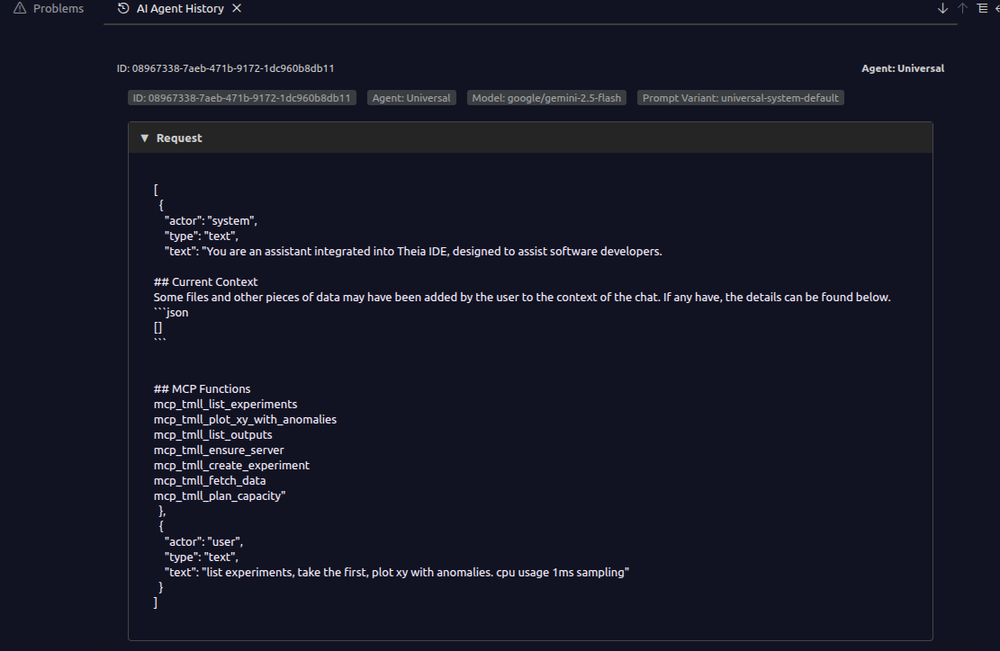
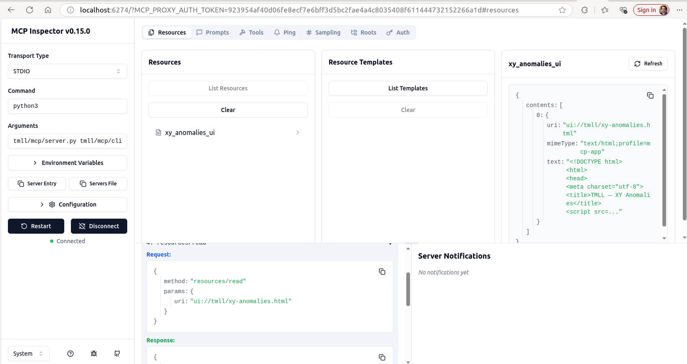
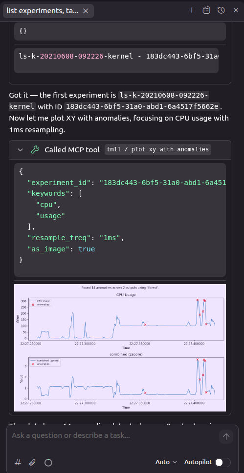
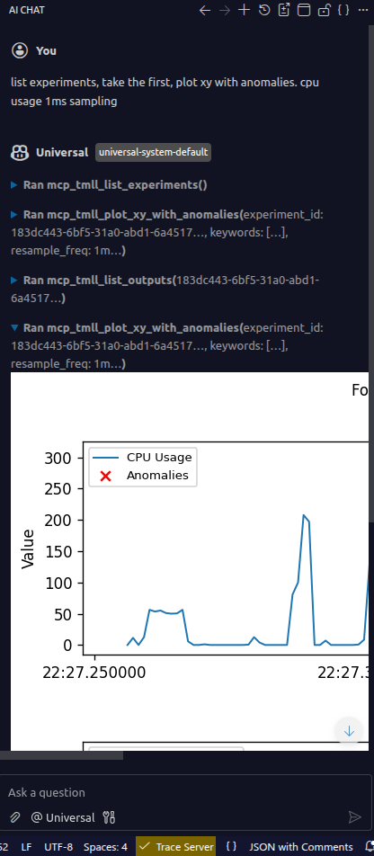

Adding MCP to TMLL
Matthew Khouzam
Ericsson Research · Open Community Experience 2026
I have the privilege of being paid by Ericsson to make the world a better place through open source.
Context before the code
Personal motivation: make trace analysis accessible to everyone, not just the experts who built it
JSON metadata means AI agents can understand trace schemas natively
Python ML library on top of the Trace Server Protocol, powerful, but requires code to use
Model Context Protocol, the universal adapter between AI and tools
Deterministic tools + AI reasoning = best of both worlds
MCP doesn't replace your tools, it gives them a new audience
Why not just feed the trace to the LLM?
| Approach | Tokens | Cost (est.) | Result |
|---|---|---|---|
| babeltrace → LLM | ~1B+ | $1000s per query | Hallucinated, non-deterministic |
| MCP + TMLL | ~2K | fraction of a cent | Deterministic ML analysis |
A 1 GB kernel trace ≈ billions of text tokens, exceeds every context window
| Operation | Direct TMLL API | MCP (via CLI) |
|---|---|---|
| Experiment creation | ~200 ms | ~800 ms |
| Anomaly detection | ~2 s | ~3 s |
| Correlation analysis | ~1.5 s | ~2.5 s |
We already had the hardware, the server, and the library. MCP just unlocked them.
Step 1: Create a CLI
#!/usr/bin/env python3
"""tmll_cli.py, 12 subcommands wrapping the TMLL library."""
import argparse
from tmll.tmll_client import TMLLClient
def detect_anomalies(args):
client = TMLLClient(args.host, args.port)
experiment = get_experiment(client, args.experiment)
outputs = experiment.find_outputs(keyword=args.keywords, type=['xy'])
ad = AnomalyDetection(client, experiment, outputs)
result = ad.find_anomalies(method=args.method)
print(f"Found {total} anomalies across {len(result.anomalies)} outputs")
# ... 11 more subcommands ...Standard argparse, nothing MCP-specific yet
~615 lines of Python total
from mcp.server.fastmcp import FastMCP
mcp = FastMCP("tmll-cli-mcp-server")
@mcp.tool()
def detect_anomalies(experiment_id: str,
keywords: list[str] = None,
method: str = None) -> str:
"""Detect anomalies in trace data using ML methods."""
args = build_args({
"keywords": ("-k", keywords or ["cpu usage"]),
"method": ("-m", method or "iforest"),
})
return run_cli("anomaly", experiment_id, *args)Any CLI → MCP tool in 5 lines of glue
ensure_servercreate_experimentlist_experimentslist_outputsfetch_datadelete_experimentdetect_anomaliesdetect_memory_leakdetect_changepointsanalyze_correlationdetect_idle_resourcesplan_capacityFastMCP's progressive discovery means the AI only pays for what it uses
Rich content returned inline
@mcp.tool()
def plot_xy_with_anomalies(experiment_id: str,
as_image: bool = True):
"""Detect anomalies and return annotated charts."""
# ... run analysis, generate matplotlib plot ...
return Image(data=buf.getvalue(), format="png")The AI doesn't just describe the anomaly, it shows you the chart
Theia IDE & MCP Inspector


MCP Inspector, test tools interactively without an AI client
One MCP server, every AI client


Theia, inline anomaly chart
Gemini, 1 GB trace, 85K tokens, 5 tool calls
MCP is a protocol, not a product. The quality is in your hands.
matthew.khouzam@ericsson.com
github.com/eclipse-tmll/tmll/pull/16
Copyright© Eclipse Foundation AISBL and contributors. Made available under CC-BY-SA 4.0 International.